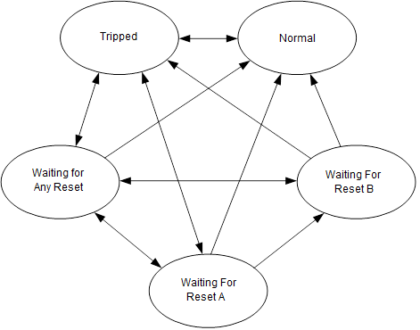

Logic Solver Effect function block execution
The Effect (LSEFFECT) block drives the output to the Normal or Tripped state based on the values of as many as four inputs. LSMON blocks, LSAVTR (analog voter) voter blocks or input blocks provide the inputs to the LSEFFECT block's OUT_D parameter. Wire the OUT_D parameter to DO or DVC blocks to drive field devices through CHARMs.
Each input has an enable and a delay timer that controls when an input can cause the block to trip.
The RESET_A, RESET_B and RESET_OPTS parameters control when the block output changes from Tripped to Normal after the inputs are no longer tripped.
- Input handling
- Force handling
- Effect state machine
Input handling
The LSEFFECT block supports one to four inputs. These inputs determine whether the block should be in the Normal or Tripped state. Each input (IN_Dn) has an ENABLEn parameter and a DELAY_TIMEn parameter.
An input is in the Disabled state if the IN_Dn parameter has a status of BadNotConnected or if ENABLEn is FALSE. An input is Normal when IN_Dn is in the normal state and is either Delayed or Tripped if IN_Dn is in the tripped state (depending on whether the DELAY_TIMEn parameter is configured). The block sets DELAY_TIMERn to DELAY_TIMEn when IN_Dn transitions to the Tripped state and counts down each time the block runs .
You can configure the block so that any or all inputs must be Tripped for the block to go to the Tripped state, through the INPUT_OPT parameter.
Input handling logic generates a single value that it sends to the effect state machine. This value is True if the input handling determines that the block should be tripped. Otherwise the value is False.
Force handling
- Do Not Force
- Force Normal
- Force Tripped
- Force permit not required to force to tripped
- No timeout when forced to normal
- Timeout on force to normal for indication only
- Force permit control should be visible in operator interface
If you do not select Force permit not required to force to tripped, FORCE_PERMIT must be True to enable the block to be forced to tripped.
The block sets the reminder bit in EFFECT_ALERTS whenever FORCE_TIMER is less than REMINDER_TIME. The OVERRIDES parameter shows when the block is forced to normal or tripped. The FORCE_OPTS controls whether the force is removed automatically when FORCE_TIMER reaches 0.
The force handling logic generates a single value that it sends to the effect state machine to indicate No Force, Force Normal or Force Tripped.
Effect state machine
The output of the effect block, OUT_D, is either Normal or Tripped. The actual value (TRUE or FALSE) depends on the value of the LOGIC_TYPE parameter. The effect state machine can be in one of five states as indicated by the STATE parameter. The following figure shows the five states and the possible transitions between the states. The state transitions are controlled by the value coming from the input handling, the force handling and the resets based on the value of RESET_OPTS.

If the value of RESET_OPTS is None then the block only be in the Normal or Tripped states. Unless the effect is being forced, the state is based purely on the value received from the input handling. This value is a Boolean that is set to True if the input handling determines the output should be tripped, otherwise it is False. If the value of FORCE_EFFECT is Force Normal or Force Tripped, and FORCE_PERMIT is true, then the state of the block is set to the corresponding state no matter what the input handling determines the state should be.
- A only: the state machine transitions to Waiting For Reset A, then when RESET_A goes to TRUE, the state machine transitions to Normal. If a trip condition occurs before RESET_A is set, the state machine returns to the Tripped state.
- A or B: the state machine transitions to Waiting For Any Reset, then, when either reset parameter goes to True, the state machine transitions to Normal. If a trip condition occurs before either reset is set, the state machine returns to the Tripped state.
- A and B: the state machine transitions to Waiting For Any Reset, then, when either of the resets goes True the state machine transitions to Waiting For Reset A or Waiting For Reset B, depending on which reset goes to True. Then, when the other reset goes to True, the state machine transitions to Normal. If the first reset goes back to false before the second reset goes True, the state machine transitions back to Waiting For Any Reset. If a trip condition occurs before both resets are set, the state machine returns to the Tripped state.
- A then B: the state machine transitions to Waiting For Reset A, then, when RESET_A goes to True, the state machine transitions to Waiting For Reset B. When RESET_B goes to True, the state transitions to Normal. If a trip condition occurs before the RESET_B parameter is set, the state machine returns to the Tripped state.
The block resets RESET_A and RESET_B to False at the end of each module execution unless the parameters are wired to use other logic. This is true of all reset options except for the A and B options as this would require both RESET_A and RESET_B to be True during the same execution. To handle cases when the value of RESET_OPT is A and B, and the block is in one of the waiting states, the logic latches RESET_A or RESET_B in the TRUE state for the time specified in RST_LATCH_TIME. The RST_LATCH_TIME parameter determines how long the reset is latched. After the time has expired, the value returns to False. The RST_LATCH_TIMER parameter shows how much of the latch period remains. The RST_LATCH_TIME and RST_LATCH_TIMER parameters have no effect when the RESET_OPT is anything other than A and B.
If FORCE_EFFECT is enabled and the FORCE_PERMIT (if required) is True, the state machine can be forced into either Normal or Tripped no matter what the value of the inputs or resets are.
The following sections describe the states in detail.
STATE: Normal
In this state, the logic drives OUT_D to the Normal state. The Normal state is False if LOGIC_TYPE is Positive and True if LOGIC_TYPE is Negative.
The block can enter this state from the Tripped state when the trip condition is no longer active and no reset behavior is configured or from any of the Waiting for Reset states when the relevant reset parameter is True. It can also be entered if the effect is forced to the Normal state.
The block generates an event whenever the block enters the Normal state.
STATE: Tripped
In this state the logic drives OUT_D to the Tripped state. The Tripped stat is True if LOGIC_TYPE is Positive and False if LOGIC_TYPE is Negative.
The block can enter this state from any of the other state if the trip condition becomes active or if the effect is forced to the tripped state.
The software generates an event whenever the block enters this state from the normal state. If the state changes from Tripped to one of the reset waiting states and back to Tripped the software does not generate an event.
STATE: Waiting For Any Reset
In this state, OUT_D remains in the Tripped state which is True if LOGIC_TYPE is Positive and False if LOGIC_TYPE is Negative.
The block can enter this state from the Tripped state if the trip condition is no longer active and the value of RESET_OPT is A or B or A and B. The block can also enter this state from the Waiting For RESET A or Waiting For RESET B states if the value of RESET_OPT is A and B and the True reset goes back to False.
STATE: Waiting For Reset A
In this state OUT_D remains in the Tripped state which is True if LOGIC_TYPE Positive and False if LOGIC_TYPE is Negative.
The block can enter this state from the Tripped state if the trip condition is no longer active and RESET_OPT is A then B or A Only. The block can enter this state from the Waiting For Any Reset state if RESET_OPT A and B and RESET_B goes to true.
STATE: Waiting For Reset BIn this state OUT_D remains in the Tripped state which is True if LOGIC_TYPE Positive and FALSE if LOGIC_TYPE is Negative.
The block can enter this state from the Waiting For Reset state if RESET_OPT is A and B, and RESET_A goes to True.